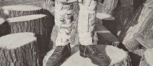

Summer, of course, is the time for all kinds of outdoor work and play . . . but if a person wants to avoid many of the scrapes, scratches, and stains that often result from such activities, some sort of leg covering is essential. Unfortunately, commercially available leggings are traditionally constructed of heavy fabric (since they're usually intended for use in cold, wet weather), making them both expensive and uncomfortably hot for summer wear. In just a minute or two, however, you can fashion yourself a "fancy" pair of shinguards with materials that are more than likely sitting around your house this very minute!
My neighbors and I cover up with the lightweight newspaper gaiters whenever we know we'll be working in overgrown thickets, picking berries in the woods, or walking through snake-infested areas. We've found that this simple sheathing keeps the cockleburs, beggars' lice, ticks, and assorted other troublemakers out of our socks, pants, and shoes. When protected by a thick enough wrapping, we can even walk safely in snake territory . . . and the newspaper also shields our legs from grass stains-not to mention the sting of flying rocks-when we mow the lawn.
To make your own "personalized" pair of leggings, simply wrap several sheets of newspaper (use whatever thickness you need for the job at hand . . . or foot) around your pants legs, and secure them in place with some masking tape. You'll be ready to tackle any outdoor chore . . . without getting scratched, bitten, or dirtied in the process. And at the end of the day you can use the wrinkled sheets of newsprint as mulch layers in the vegetable garden, or shred them up for cozy animal bedding material.
The next time you head into the great outdoors, strap on a pair of my Mother Earth leggings . . . and sally forth to meet the "dangers" of summer in a style that's "right out of today's headlines"!
|
 Photo By The Author |
|
|